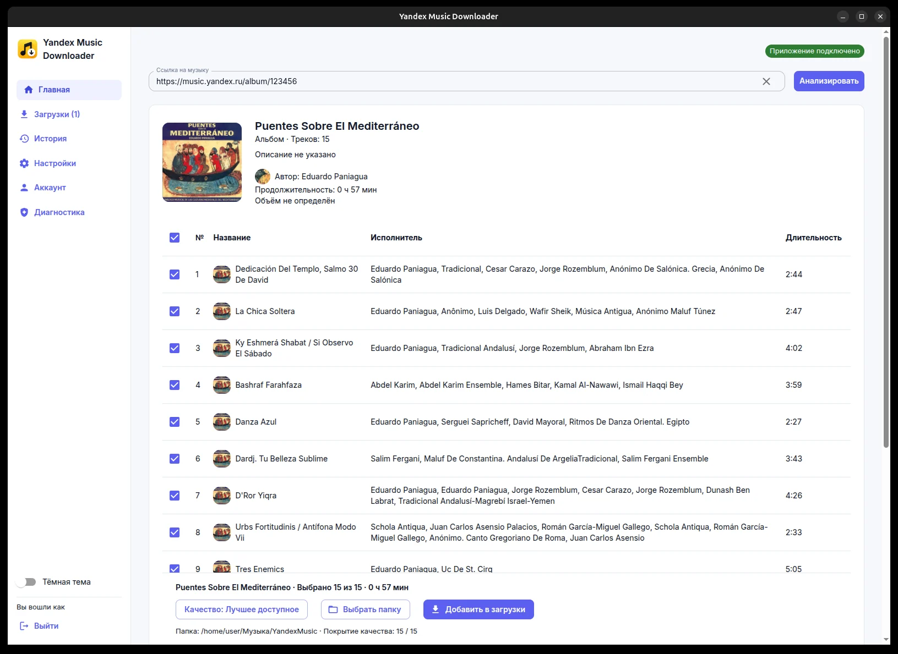

Любимая музыка — в вашей коллекции
Сохраняйте треки, альбомы и плейлисты Яндекс Музыки на компьютер — с обложками, тегами и удобной очередью загрузок. Бесплатно и с открытым исходным кодом.
Приложение работает на компьютере. Откройте эту страницу на Windows, macOS или Linux — или выберите систему ниже.

Всё для аккуратной коллекции
Вставьте ссылку — приложение само позаботится о файлах, метаданных и обложках.
Треки, альбомы, плейлисты
Один трек или целая коллекция по ссылке из Яндекс Музыки. Перед загрузкой видно состав и длительность.
Выбор качества
Лучшее доступное качество, предпочтение lossless или конкретный вариант для трека.
Теги и обложки
Названия, исполнители, альбомы и номера треков сохраняются вместе с музыкой.
Порядок в файлах
Своя папка и схема имён. Для плейлиста — файл
.m3u8 для любимого проигрывателя.
Управляемая очередь
Пауза, продолжение, отмена и повтор. После прерывания можно вернуться к заданию.
История под рукой
Поиск по прошлым загрузкам, фильтры по датам и быстрый переход к папке с результатом.
От ссылки до музыки — три шага
Без регистрации на сторонних сайтах: вход через браузер на стороне Яндекса.
- Скачайте приложение Один файл для вашей системы — устанавливать ничего не нужно.
- Войдите в аккаунт Подтвердите вход в браузере. Пароль вводится у Яндекса, приложение его не видит.
- Вставьте ссылку Выберите качество и папку — готовые файлы появятся с тегами и обложками.
Скачать для своей системы
Последняя версия со страницы релизов на GitHub.
Windows
Запустите скачанный файл — установка не нужна. Если SmartScreen предупредит о неизвестном издателе, нажмите «Подробнее» → «Выполнить в любом случае».
СкачатьmacOS · Apple Silicon
Распакуйте архив и перенесите приложение в «Программы». Если macOS не даст открыть его, нажмите «Всё равно открыть» в «Системных настройках» → «Конфиденциальность и безопасность».
СкачатьmacOS · Intel
Распакуйте архив и перенесите приложение в «Программы». Если macOS не даст открыть его, нажмите «Всё равно открыть» в «Системных настройках» → «Конфиденциальность и безопасность».
СкачатьLinux
Разрешите запуск файла: в его свойствах отметьте «Разрешить
выполнение как программы» или выполните
chmod +x. Затем откройте AppImage.
Пакеты не подписаны сертификатами Apple и Microsoft, поэтому система может предупредить о неизвестном издателе. Обновления приложение проверяет само: по собственной подписи, размеру и SHA-256.
Соберите свою коллекцию
Плейлист для дороги, любимый альбом целиком или один трек — всего в пару кликов.
Скачать приложение